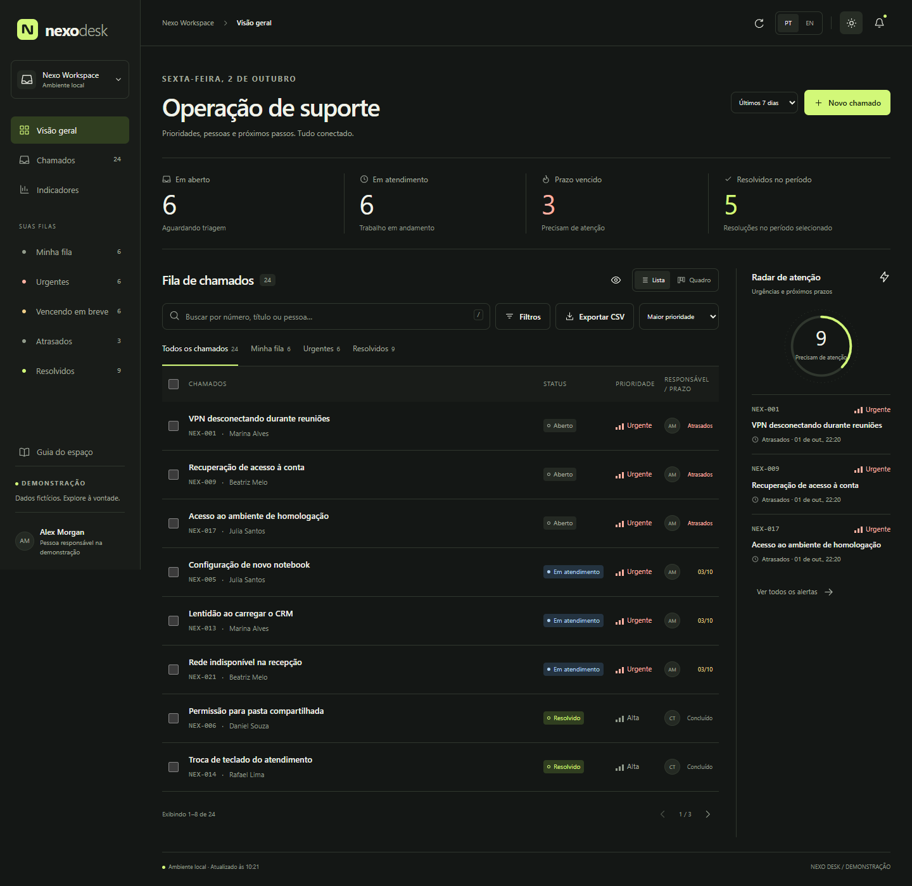

01 / SISTEMA DE CHAMADOS
Nexo Desk.
Central de suporte para acompanhar chamados, prioridades, pessoas e prazos. Reúne filas, busca, filtros, quadro por status, indicadores, notas internas e histórico; ações em lote podem ser desfeitas por 60 segundos.
A demonstração pública usa dados fictícios e salva as alterações neste navegador.
HTML · CSS · JavaScript · GSAP
Versão local: Node.js · Express · SQLite